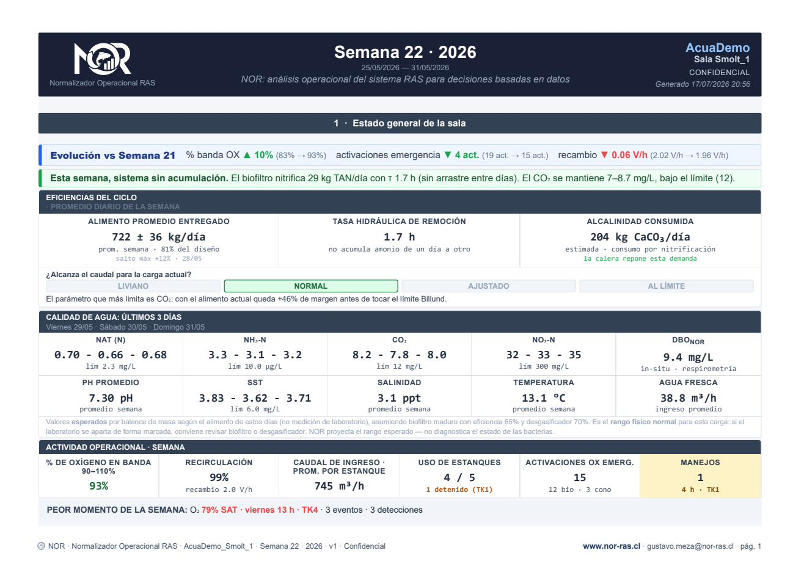

NOR correlaciona variables operacionales provenientes del SCADA y genera un análisis semanal del comportamiento del sistema.

Trazabilidad completa de la información.
Relaciones causa-efecto multivariables.
Balance de masa y modelos ingeniería RAS.
Estados de equipos y eventos operacionales.